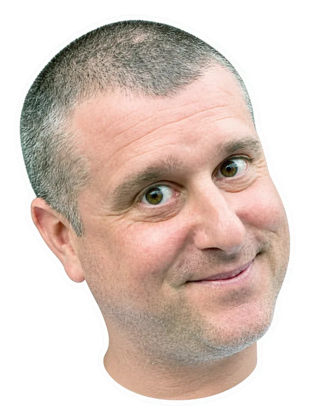

Introducing the <bruce-lawson> web component.
No JavaScript? Fine by me. This is progressive enhancement: still a Bruce, just fewer moving parts.

Bruce fires bruce:rant, bruce:change, bruce:hoedown, bruce:flip and bruce:offended. They bubble out of the shadow DOM, like his opinions.
| Attribute | Values | What it does |
|---|---|---|
head | auto, happy1, happy2, cheeky, quizzical, talk, orly, glare, jaded, visionary, innocent, sceptical, smirk, viking | auto picks a face to suit his mood, and swaps it while he rants. |
background | gallery, oslo, irises, stage, cma, eu, random, or an image URL | He brings his own stage, and the element becomes the whole framed card. Without it, he’s a cut-out. |
top | compliant-tee, blazer, circles, pin-jacket, chaos, opera-tee, vivaldi-tee, cowboy, pink-blazer, kitten-tee, random | What he’s wearing on top. |
legs | jeans, black-jeans, formal, stripes, golden-shorts, random | Trousers, each with its own shoes. |
props | Space-separated: guitar, mic, clicker, laptop, phone, guinness, point-left, point-right, peace-left, peace-right, lanyard, lei, or random | What he’s holding or wearing. Each hand holds one thing, so when props clash the later one wins. Left and right are Bruce’s own. |
rant | engines, dma, ai, standards, random | The topic of his speech bubble when pressed. |
hoedown | boolean | Plays a hoedown, and he jigs and pulls faces. Browsers block autoplay, so he waits for a press. |
hoedown-src | URL | Plays your audio file instead of the built-in hoedown. |
glamorous | anything except "false" | Try "false" and check the console. |
ai | boolean | He refuses to work. |
flipped | boolean | Turns him over to show his source code, and someone turns up to have a word about it. |
reduced-motion | boolean | He stops moving and glares, just as when your system asks for reduced motion. |
quiet | boolean | No sound when you press him or turn him over. |
Methods: rant(), say(text), reroll(), hush() and flip().
src/bruce-lawson.js and assets/ to your site, keeping that folder layout.<script type="module" src="src/bruce-lawson.js"></script><bruce-lawson top="cowboy" props="guitar"></bruce-lawson>background, give him a width and height. Without one, size him with --bruce-size and leave room above him for his opinions.